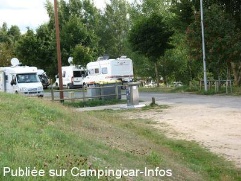
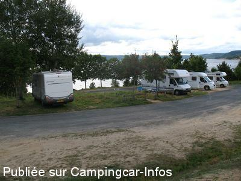
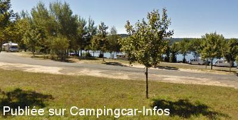
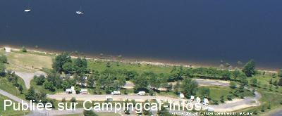
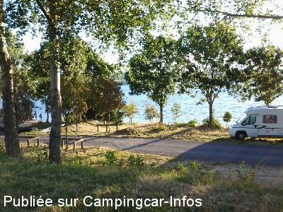

ASN = Aire de services avec stationnement nuit possible de :
LANGOGNE Lac de Naussac
(N° 356)
Accès/adresse :
Base Plein Nature Espace Bleu
Base nautique du lac de Naussac
48300 LANGOGNE Lac de Naussac
Base nautique du lac de Naussac
48300 LANGOGNE Lac de Naussac
Latitude : (Nord) 44.737007° Décimaux ou 44° 44′ 13′′
Longitude : (Est) 3.834488° Décimaux ou 3° 50′ 4′′
Tarif : 2014
Stationnement, services : 8,40 à 9,60 €
5 h de stationnement, services : 5 €
Heure supplémentaire : 1 €
Automate de paiement
Type de borne : EURO-RELAIS
Services :


Poubelles
Autres informations :
Ouvert toute l'année
40 emplacements
Wifi code connexion : 480407
Tel : +33(0)183 646 921
contact@campingcarpark.com
http://www.langogne-campingcarpark.com

Le 03/01/2014 par DIDI 31

Le 03/01/2014 par DIDI 31

Le 26/09/2013 par

Le 24/09/2013 par

Le 24/09/2013 par
de
Philippe
le 15/08/2015 :
Meme commentaire que le précédent. En plus il faut faire la queue pour entrer car il n'y a personne pour lever la barrière. Aire à éviter, c'est cher et ça ressemble plus à un piège à touristes. Dommage car le cadre est sympa.
Meme commentaire que le précédent. En plus il faut faire la queue pour entrer car il n'y a personne pour lever la barrière. Aire à éviter, c'est cher et ça ressemble plus à un piège à touristes. Dommage car le cadre est sympa.
de
Péna
le 14/07/2015 :
Dommage d'avoir concédé cette aire !
C'est hors de prix pour les prestations proposées ! Nous passerons notre chemin et irons passer la nuit à Langogne où c'est gratuit ou à Pradelles chez le charcutier qui nous reçoit sans nous faire payer
Dommage d'avoir concédé cette aire !
C'est hors de prix pour les prestations proposées ! Nous passerons notre chemin et irons passer la nuit à Langogne où c'est gratuit ou à Pradelles chez le charcutier qui nous reçoit sans nous faire payer
de
arthur03
le 07/07/2015 :
Si l'environnement est des plus agréable sur le lac de Naussac, l'aménagement et l'entretien de cette aire ne justifie pas le prix payé ( sans compter qu'il faut acheter la carte qui même si elle ouvre droit aux autres aires de camping car park qui sont peu nombreuses)
Si l'environnement est des plus agréable sur le lac de Naussac, l'aménagement et l'entretien de cette aire ne justifie pas le prix payé ( sans compter qu'il faut acheter la carte qui même si elle ouvre droit aux autres aires de camping car park qui sont peu nombreuses)
de
Jean-Pierre
le 14/05/2015 :
Passé le 8 ami 2015. Camping Car Park avec le problème récurrent de l'ouverture de la barrière. pas de Wi-Fi, site à moitié clôturé, espaces verts peu entretenus. Prestations pas la hauteur de ce qui est annoncé. C'est bien dommage par rapport au site, l'organisation de cette aire ne permet pas de profiter agréablement de ce cadre superbe. Dommage.
Passé le 8 ami 2015. Camping Car Park avec le problème récurrent de l'ouverture de la barrière. pas de Wi-Fi, site à moitié clôturé, espaces verts peu entretenus. Prestations pas la hauteur de ce qui est annoncé. C'est bien dommage par rapport au site, l'organisation de cette aire ne permet pas de profiter agréablement de ce cadre superbe. Dommage.
de
easwood
le 01/05/2015 :
de passage le 10 4 2015 la barrier ne vouler pas souvrie j ai du telephone au numero indique au bou de 15minutes que j ai pu rentre et je cofirme une seul prise pour 20 camping car c est peut
de passage le 10 4 2015 la barrier ne vouler pas souvrie j ai du telephone au numero indique au bou de 15minutes que j ai pu rentre et je cofirme une seul prise pour 20 camping car c est peut
de
Alain et Gilles
le 28/01/2015 :
En passant en janvier sur cette aire magnifique mais avec - 10° dans la nuit nous avons eu de la chance de pouvoir se brancher sur l'unique prise de courant à la borne de service pour prévoir un petit chauffage électrique très utile toute la nuit. Le manque de prises électriques a été signalé et transmis aux gestionnaires (c-carPark et mairie).A suivre...
En passant en janvier sur cette aire magnifique mais avec - 10° dans la nuit nous avons eu de la chance de pouvoir se brancher sur l'unique prise de courant à la borne de service pour prévoir un petit chauffage électrique très utile toute la nuit. Le manque de prises électriques a été signalé et transmis aux gestionnaires (c-carPark et mairie).A suivre...
de
La gestion des aires
le 17/11/2013 :
Bonjour,
Tout est dit, inutile d'en débattre ici, les commentaires ne seront plus affichés
La gestion des aires
Bonjour,
Tout est dit, inutile d'en débattre ici, les commentaires ne seront plus affichés
La gestion des aires
de
noelly
le 17/08/2013 :
l'aire est géniale !!!de la place; une vue sur le lac que demander de mieux . pour le bruit nous avons passés 2 nuits 13 /14 aout sans aucun bruits que ce musique ou sortie de boite.
l'aire est géniale !!!de la place; une vue sur le lac que demander de mieux . pour le bruit nous avons passés 2 nuits 13 /14 aout sans aucun bruits que ce musique ou sortie de boite.
de
ingrid
le 14/08/2013 :
cardre tres agréable en bordure du lac. des chevaux a cote de l'aire et des anes un peu plus loin ont fait le plaisir de mes filles. certes nuisances de la discotheque mais n'enleve pas la beauté du cadre.
cardre tres agréable en bordure du lac. des chevaux a cote de l'aire et des anes un peu plus loin ont fait le plaisir de mes filles. certes nuisances de la discotheque mais n'enleve pas la beauté du cadre.
de
Bernard
le 06/08/2013 :
Aire à proximité d'une discothèque, ouvrant les fins de semaine.
Bruit assuré de 23h30 à 6h du matin.
Entré vendredi 2/08/2013 à 9h48, la nuit du 2 au 3 la musique a commencé à 23 h 30 pour finir à 7 h 15.
Le 3 vers 23 h 50 cela recommencé, j'ai dû plié et partir dormir à 9 kilomètres (Pradelles) dans une aire France passion.
Pour des raisons de non fonctionnement de la borne pour sortir on vous demande de communiquer votre numéro de carte bancaire par téléphone.
Aire à proximité d'une discothèque, ouvrant les fins de semaine.
Bruit assuré de 23h30 à 6h du matin.
Entré vendredi 2/08/2013 à 9h48, la nuit du 2 au 3 la musique a commencé à 23 h 30 pour finir à 7 h 15.
Le 3 vers 23 h 50 cela recommencé, j'ai dû plié et partir dormir à 9 kilomètres (Pradelles) dans une aire France passion.
Pour des raisons de non fonctionnement de la borne pour sortir on vous demande de communiquer votre numéro de carte bancaire par téléphone.
de
le 22/07/2013 :
Aire équipée d'un accès " Park" nécessitant une carte bleue; 9.60 euros pour 24h avec borne de vidange et services; point de vue superbe en bordure du lac; tous commerces à Langogne ( 5mntes en CC). Possibilité de baignade , parcours VTT et randonnée, location de canoë.... merci pour cette aire.
Aire équipée d'un accès " Park" nécessitant une carte bleue; 9.60 euros pour 24h avec borne de vidange et services; point de vue superbe en bordure du lac; tous commerces à Langogne ( 5mntes en CC). Possibilité de baignade , parcours VTT et randonnée, location de canoë.... merci pour cette aire.